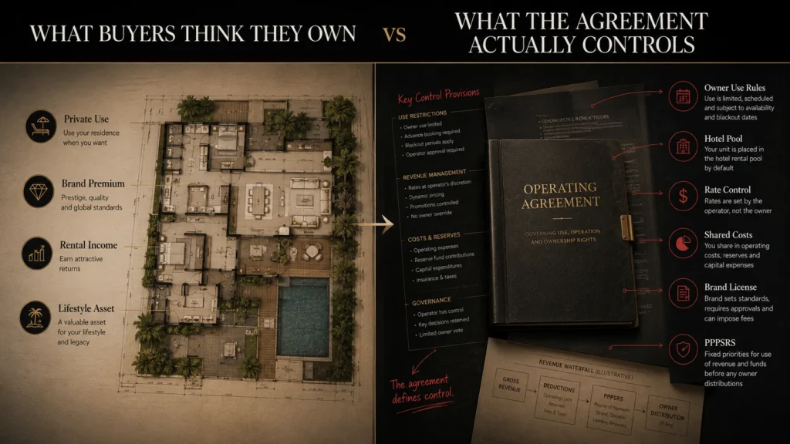
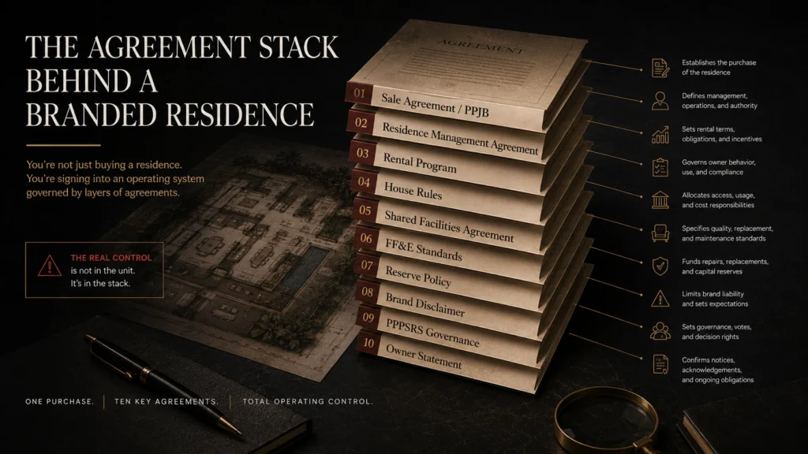
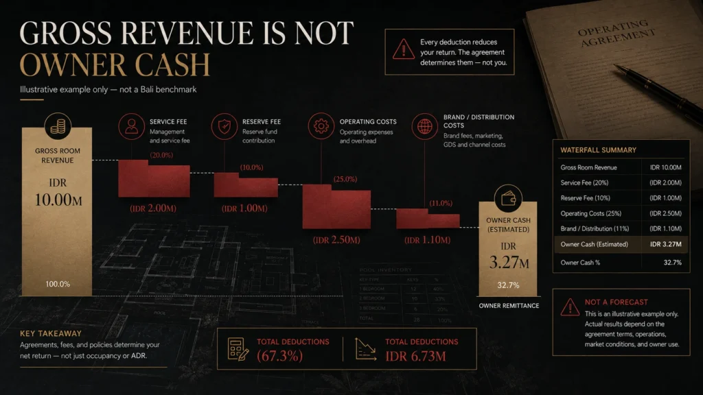
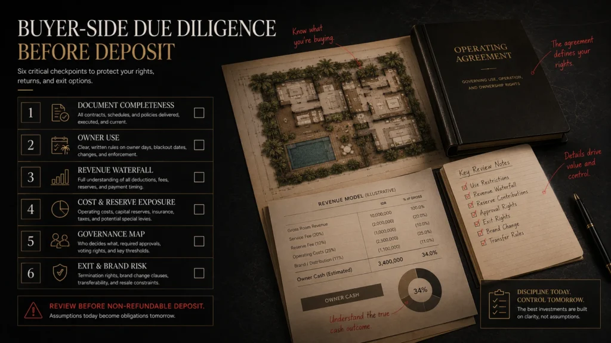

A branded residence operating agreement defines the real ownership experience: not the render, the brand brochure, or the headline yield.
A branded residence is not a hotel room, a private home, or a conventional investment property. Instead, it is a layered legal, commercial, and operating product. In Bali and Indonesia, that distinction matters because many buyers still underwrite the brand, the design, or the promised return before they understand the agreement that controls use, income, costs, governance, and exit risk.
For buyers, family offices, developers, and asset managers, the correct question is not only: “What am I buying?”
The better question is: “What do I actually control after the branded residence operating agreement is signed?”
This article provides a commercial and operator-side analysis. It is not legal advice. Qualified Indonesian legal counsel should review legal title, foreign ownership eligibility, tax, enforceability, and regulatory compliance.
Key Takeaways
- A branded residence operating agreement can define the real asset more than the sales brochure does.
- Title is not the same as control. A buyer may own or contract for a unit while the operator controls rates, inventory, owner-use rules, rental participation, housekeeping standards, FF&E requirements, and service delivery.
- Headline yield is not owner cash yield. Service fees, reserve contributions, operating costs, brand-related charges, OTA commissions, credit-card fees, taxes, insurance, utilities, and owner-association charges can reduce gross rental income before the owner receives cash.
- Brand continuity is not automatic. Public Bali-facing branded residence disclaimers already show that brand rights may depend on license and management arrangements that can terminate.
- Serious buyers should review the full document stack before any deposit becomes non-refundable: sale agreement, rental program, residence rules, shared-facility agreement, reserve policy, brand disclaimers, sample owner statement, and governance documents.
Why This Topic Matters Now in Bali and Indonesia
Bali is no longer a fringe branded-residence market.
The 2026 Horwath HTL / C9 Hotelworks report on Bali hotel and branded residences states that Bali had more than seventy hospitality-managed real estate developments actively on sale. The report also identifies Canggu/Berawa and Uluwatu as major development concentrations.
That growth creates opportunity. However, it also creates information asymmetry.
The stronger the brand story, the easier it becomes for buyers to assume the operating structure is already safe. That assumption is dangerous.
Bali’s hotel market is also cyclical. Official BPS Bali data reported star-rated hotel occupancy of 55.44% in February 2026 and 52.54% in March 2026. These figures do not predict the performance of any individual branded residence. Nevertheless, they remind investors that income depends on demand cycles, seasonality, inventory control, distribution, owner use, and operating discipline.
Therefore, a branded residence investment should not be reviewed only as real estate. It should be reviewed as a hospitality operating structure.
For investors still at the early project stage, this same discipline should sit beside a proper hotel feasibility study in Bali. The commercial logic, operating model, and legal structure must be tested before capital is committed.
The Core Problem: Buyers Confuse Title With Control
Many branded residence buyers think they are buying three things at once:
- A private home.
- A hotel-managed lifestyle asset.
- A passive investment property.
In practice, those three ideas often conflict.
A private home implies flexible use.
A hotel-managed asset requires standards, inventory control, guest-experience discipline, and operator discretion.
An investment property needs income optimization, limited personal use, cost control, and predictable reporting.
The branded residence operating agreement decides which logic dominates.
For example, a buyer may say, “This is my villa.” The agreement may say the unit must remain within hotel standards, be booked through the operator, follow owner-use procedures, pay reserve contributions, accept booking-priority rules, and participate in a defined rental structure.
That does not make branded residences bad. It makes them sophisticated.
As a result, sophisticated buyers need sophisticated underwriting.
What Buyers Think They Own vs What They Actually Have
| Buyer Assumption | Operating Reality to Test |
|---|---|
| “I own the unit, so I can use it whenever I want.” | Owner use may be capped, restricted during peak periods, subject to prior bookings, or charged for cleaning and services. |
| “The brand guarantees income.” | The brand may support positioning and standards, but usually does not guarantee financial returns unless enforceable terms clearly say so. |
| “The operator works for me.” | The operator may manage the rental program, but the contract defines its authority, reporting duties, discretion, and conflict protections. |
| “Gross rental revenue is my income.” | Multiple deductions may reduce gross revenue before the owner receives cash. |
| “The branded premium is permanent.” | Brand affiliation can depend on license, hotel management, or project agreements that may terminate. |
| “The owners’ association controls the project.” | The PPPSRS may govern jointly owned property, but it does not automatically give buyers control over hotel operations, pricing, staffing, or brand standards. |
This gap between perception and contractual reality is where many disputes begin.

The Agreement Stack Behind a Branded Residence
A buyer should not review only the sale contract. In a serious branded-residence transaction, the real bargain may sit across several documents.
| Document | What It Usually Controls |
|---|---|
| Sale agreement / PPJB / transfer documents | Purchase terms, delivery, payment schedule, title pathway, buyer obligations |
| Occupancy or residence management agreement | Use rules, management obligations, services, charges, compliance |
| Rental program / hotel pool agreement | Rental participation, revenue allocation, booking priority, owner use, operating costs |
| House rules / residence rules | Conduct, pets, smoking, noise, guest registration, facility use |
| Shared-facility agreement | Use and cost allocation for hotel, residence, infrastructure, pools, spa, parking, utilities |
| FF&E / OS&E standards | Furniture, equipment, replacement obligations, brand standards |
| Reserve policy | Sinking fund, FF&E reserve, capital replacement, refurbishment contributions |
| Brand disclaimer / purchaser acknowledgement | Limits of brand liability, brand role, license risk, non-guarantee language |
| PPPSRS / strata governance documents | Common-property governance, service charges, voting mechanics, financial reporting |
| Sample owner statement | Monthly or quarterly reporting format and deduction waterfall |
Public Bali-facing materials already show why this matters.
The Mandarin Oriental Residences Bali public disclaimer states that the developer is the sole offeror of the real property and any rental programs. It also states that the developer’s right to use Mandarin Oriental marks depends on a non-exclusive license that may terminate.
This type of disclaimer is not unusual in branded residences. However, it is commercially important because buyers must understand the difference between buying a residence associated with a brand and buying a perpetual right to the brand itself.

Where the Branded Residence Operating Agreement Usually Hurts the Owner
1. Owner-use restrictions
Owner use is often the first surprise.
A buyer may assume that personal use is flexible. However, the agreement may say otherwise.
Public comparable rental-management documents show that owner occupancy can require booking through the manager, advance scheduling, priority for existing guest bookings, and cleaning or service charges. One comparable rental-management document notes that owner use during high-demand dates can reduce income and that prior guest bookings may take priority if the guest cannot be moved.
These are not Bali standard terms. Instead, they illustrate the types of mechanics a buyer should expect to review.
The buyer-side question is simple:
Can I use the unit when I want, or only when the operating system allows it?
2. Revenue waterfall
The most dangerous number in a branded residence sales pitch is often the gross revenue number.
Gross rental revenue is not the same as owner income.
A public comparable condo-hotel FAQ shows a structure where gross room rental revenue is reduced by an 8.25% service fee and a 5% reserve fee, then split 55/45, with the owner also bearing 50% of allocated operating expenses.
On a simplified IDR 10,000,000 gross revenue example, the owner would receive approximately IDR 3,271,250 after those stated deductions and a 50% share of IDR 3,000,000 operating expenses. That equals about 32.7% of gross revenue.
This is not a Bali benchmark. It is not a forecast. Rather, it illustrates why buyers must model the full revenue waterfall.

| Illustrative Revenue Line | IDR |
|---|---|
| Gross room revenue | 10,000,000 |
| Less: 8.25% service fee | (825,000) |
| Less: 5% reserve fee | (500,000) |
| Net room revenue | 8,675,000 |
| Owner share at 55% | 4,771,250 |
| Less: 50% share of IDR 3,000,000 operating costs | (1,500,000) |
| Approximate owner remittance | 3,271,250 |
| Approximate owner remittance as % of gross | 32.7% |
A buyer who models only occupancy and ADR is not underwriting the asset. They are underwriting the brochure.
For developers, this is also a product-clarity issue. If the project’s commercial logic is not clear, the development may need a deeper Bali hotel concept stress test before the sales story goes too far.
3. Shared-service and reserve costs
Branded residences often benefit from hotel-grade services: reception, security, landscaping, engineering, housekeeping, guest registration, pools, wellness, parking, utilities, and back-of-house support.
However, those services are not free.
Under Indonesia’s Permen PKP No. 4 of 2025, apartment-management cost components may include management, unit services, shared water and electricity, security, cleaning, parking, materials, spare parts, administration, tax, and insurance. The regulation also addresses sinking fund contributions, bank accounts, separate bookkeeping, and audited annual financial statements.
For a branded residence buyer, the practical question is not only: “What facilities do I get?”
The better question is:
Who pays for them, through which account, under which approval process, and with what audit rights?
4. Operator discretion
Hotel operations require discretion.
Rates change. Minimum stays change. Distribution changes. Housekeeping standards change. Guest expectations change. FF&E standards evolve.
Public comparable rental documents show that managers may determine rental policies, including rates, maximum and minimum stays, housekeeping service levels, and seasonal promotions. Again, these are not Bali standard terms. However, they show how hotel-style rental programs often operate.
This discretion may be commercially necessary. A hotel operator cannot optimize performance if every pricing, distribution, or service decision requires individual owner approval.
Even so, buyers must understand what rights they have.
Do they have approval rights?
Do they have information rights?
Do they have inspection rights?
Do they have dispute rights?
Or do they only receive after-the-fact reporting?
The answer sits in the branded residence operating agreement.
5. Brand-continuity risk
A branded residence premium is partly a confidence premium.
The buyer pays more because the brand suggests service quality, design discipline, global recognition, rental appeal, and resale strength.
However, the brand is usually a contractual layer, not a physical characteristic of the unit.
The Mandarin Oriental Residences Bali disclaimer is useful because it makes the commercial issue visible: the right to use the brand marks may terminate if relevant agreements terminate or the brand ceases to manage the hotel or residences.
That does not mean the project is weak. Instead, it means buyers should underwrite a brand-exit scenario.
A serious buyer should ask:
- What happens if the brand exits?
- Does the rental program continue?
- Does the operator change?
- Do residence owners have approval rights?
- Are there rebranding costs?
- Does the buyer have any remedy?
- How might resale value change?
6. Governance and PPPSRS reality
In Indonesia, PPPSRS governance matters. However, PPPSRS is not the same thing as hotel operating control.
The PPPSRS may govern jointly owned apartment property, service charges, sinking funds, financial reporting, and certain owner-participation matters. However, it does not automatically give individual residence buyers control over hotel pricing, distribution, staffing, brand standards, or rental-pool strategy.
A branded residence may therefore have several governance layers.
| Layer | Typical Role |
|---|---|
| Developer | Project delivery, initial structure, sales documents, transition period |
| Brand | Brand standards, mark usage, service expectations, license or management relationship |
| Operator | Hotel or residence management, rental program, service delivery, reporting |
| PPPSRS | Common-property governance and owner-association functions |
| Area-level forum, where applicable | Shared area governance in phased or mixed-use projects |
| Individual owner | Unit-level rights and obligations under the documents |
The buyer’s mistake is to assume these layers are aligned by default.
They may be aligned. However, the documents must prove that alignment.
For foreign investors and developers, this governance review should also connect to licensing and compliance. A branded residence structure should not be separated from broader Bali hospitality licensing and KBLI risk, especially where the project mixes residential, hospitality, wellness, F&B, and short-stay rental functions.
The Zenith View: Underwrite the Operating System, Not the Brochure
Zenith’s operator-first view is simple:
A branded residence should be reviewed as an operating system before it is reviewed as a lifestyle purchase.
The brochure shows the asset at its most attractive moment. By contrast, the branded residence operating agreement shows the asset under pressure.
That pressure appears when:
- the buyer wants peak-season owner use;
- occupancy is weaker than projected;
- the operator changes rate strategy;
- FF&E replacement becomes necessary;
- the brand exits;
- the PPPSRS disputes shared cost allocation;
- the rental pool underperforms;
- the owner wants to sell;
- the developer-controlled transition period ends;
- a shared facility needs major CAPEX;
- the hotel prioritizes guest inventory over owner convenience.
This is where a branded residence becomes commercially real.
A buyer who reviews only price, floor plan, brand, projected yield, and lease term is not underwriting the asset. They are underwriting the sales narrative.

Buyer-Side Due Diligence Framework
Before committing capital, a buyer should complete six workstreams.
| Workstream | Key Questions |
|---|---|
| 1. Document completeness | Do you have the sale agreement, rental agreement, residence rules, shared-facility agreement, reserve policy, brand disclaimer, sample owner statement, and draft budget? |
| 2. Owner-use model | How many days can you use the unit? Are peak dates restricted? Do prior bookings take priority? What charges apply? |
| 3. Revenue waterfall | What is deducted before owner remittance? Are fees calculated on gross revenue or net revenue? Are operating costs allocated before or after the split? |
| 4. Cost and reserve exposure | What are the service charges, sinking fund, FF&E reserve, utilities, insurance, taxes, and special assessment risks? |
| 5. Governance map | Which decisions belong to the operator, developer, PPPSRS, brand, or owner? What happens after transition? |
| 6. Exit and brand-risk test | What happens if the owner sells, the brand exits, the operator changes, or the rental program terminates? |
This is not over-lawyering. It is basic buyer-side commercial discipline.
Operational Implications
For operators and developers, this topic is not only a buyer-risk issue. It is also a project-risk issue.
Poorly explained operating agreements create future conflict. Buyers may discover restrictions in year three that they did not understand in year one. As a result, complaints, disputes, reputational damage, and governance friction can increase after opening.
Developers should therefore treat the operating agreement as a product-clarity tool, not as legal back-office paperwork.
Operationally, a serious branded residence scheme should have:
- clear owner-use rules;
- transparent revenue statements;
- plain-English cost allocation;
- realistic reserve policies;
- defined FF&E replacement standards;
- clear hotel-vs-residence service boundaries;
- governance handover logic;
- dispute-escalation procedures;
- brand-exit and operator-change scenarios;
- buyer education before commitment.
The better the explanation before sale, the lower the conflict after opening.
Commercial Implications
The branded residence operating agreement affects five commercial dimensions.
| Dimension | Commercial Impact |
|---|---|
| Income | Determines owner cash yield after deductions, not just headline rental revenue |
| Lifestyle value | Determines actual personal-use flexibility |
| Liquidity | A restrictive or unclear structure can affect resale appeal |
| Asset protection | Governance, reserves, insurance, and replacement obligations affect long-term condition |
| Brand premium | Brand continuity and operator quality affect pricing power and resale confidence |
For family offices and high-net-worth buyers, the most important question is not whether a branded residence can be a good asset. It can.
The question is whether the buyer is paying a premium for a structure they have actually understood.
The same applies to developers. If the branded residence is part of a larger hospitality or wellness ecosystem, the agreement must connect with the full operating model. This is especially important when the project includes spa, recovery, medical wellness, or lifestyle-club components. In those cases, the agreement should be reviewed alongside the project’s wellness resort feasibility in Bali, not after the product promise has already been sold.
What To Do Before Committing Capital
Before signing or allowing a deposit to become non-refundable, buyers should request and review:
- sale agreement or PPJB;
- rental program or hotel pool agreement;
- residence management agreement;
- owner-use rules;
- house rules;
- shared-facility agreement;
- FF&E and OS&E standards;
- reserve policy and replacement logic;
- draft operating budget;
- sample owner statement;
- insurance requirements;
- brand disclaimer and purchaser acknowledgement;
- PPPSRS governance documents;
- transition-period arrangements;
- operator-change and brand-exit clauses;
- resale and assignment rules.
The review should use two parallel lenses.
Legal counsel should review title, enforceability, foreign ownership eligibility, tax, regulatory compliance, and dispute remedies.
Operator-side commercial review should test owner use, revenue waterfall, operating costs, service logic, brand standards, governance reality, guest-inventory control, and asset-performance implications.
Both are required. One does not replace the other.
FAQ
What is a branded residence operating agreement?
A branded residence operating agreement is the document, or set of documents, that defines how a branded residence operates after purchase. It may control owner use, rental-pool participation, hotel services, service charges, reserve contributions, operator authority, reporting, brand standards, and governance obligations. Buyers should not treat it as administrative paperwork. It is one of the most important documents in the transaction because it determines the practical ownership experience.
Is a branded residence in Bali the same as owning a private villa?
No. A branded residence may feel like a private villa, but commercially it usually forms part of a managed hospitality system. The buyer’s rights depend on the sale documents, title structure, residence rules, hotel-pool agreement, owner-use rules, brand arrangements, and shared-facility obligations. The key issue is not only whether the buyer has rights to a unit. The key issue is what the buyer can actually do with the unit after the operating structure applies.
Can a branded residence buyer use the unit whenever they want?
Not necessarily. Owner use may be subject to reservation procedures, annual caps, peak-period restrictions, existing guest bookings, cleaning charges, service charges, and rental-program rules. Public comparable agreements show that owner use can face commercial restrictions when the unit forms part of hotel inventory. Therefore, buyers should model personal use before purchase because peak-season owner stays can reduce rental income and affect distribution fairness.
Does the hotel brand guarantee rental income?
Usually not, unless the transaction documents include a specific and enforceable guarantee. A brand can support pricing power, market confidence, operating standards, and resale perception, but that is different from guaranteeing income. Public branded-residence disclaimers often separate the developer’s sales role from the brand’s role. Buyers should review all disclaimers, projections, purchaser acknowledgements, and rental-program terms before relying on any income expectation.
What is a hotel pool agreement?
A hotel pool agreement is a rental structure where privately owned units enter a hotel-style rental program under defined rules. The agreement may control pricing, minimum stays, booking priority, owner use, revenue allocation, deductions, reporting, operating costs, standards, and termination. The commercial result depends on the exact revenue waterfall. Buyers should never rely only on projected occupancy and ADR without reviewing the deduction sequence and owner remittance logic.
What is PPPSRS and why does it matter?
PPPSRS is the Indonesian owners’ and residents’ association structure for apartment property governance. It matters because it can govern common-property management, service charges, sinking funds, bank accounts, financial reporting, and owner participation in certain decisions. However, PPPSRS governance does not automatically give residence buyers control over hotel operations, brand standards, pricing, distribution, staffing, or rental-pool strategy. Buyers must map PPPSRS rights separately from operator rights.
What should a developer do to reduce future disputes?
A developer should explain the operating structure before buyers commit. That means providing plain-English summaries, sample owner statements, transparent owner-use rules, clear revenue-waterfall examples, shared-cost logic, reserve policies, brand-continuity explanations, and governance handover timelines. Disputes often arise when buyers discover operational restrictions only after opening. Therefore, stronger buyer education before sale can reduce the risk of reputation damage after handover.
Can Zenith review a branded residence operating agreement?
Yes. Zenith can review the operating and commercial architecture from an owner-side and operator-first perspective. The review should focus on owner-use rules, rental-pool mechanics, revenue waterfall, operating-cost allocation, service boundaries, brand-continuity exposure, governance map, pre-opening obligations, and asset-performance implications. Legal enforceability, title, tax, and regulatory interpretation should remain with qualified Indonesian legal counsel.
Summary Takeaways
A branded residence buyer does not only buy a unit. The buyer buys into a system.
That system may be valuable. It can provide brand prestige, professional management, service consistency, rental access, and stronger positioning than an unbranded standalone villa or apartment.
However, the same system can also restrict owner use, dilute gross income, impose shared costs, require ongoing reserves, limit governance rights, and expose the buyer to brand-continuity risk.
The buyer who understands the branded residence operating agreement before signing is buying with discipline.
By contrast, the buyer who discovers it later is negotiating with reality after the capital is already committed.
CTA
Before signing a branded residence purchase or allowing a deposit to become non-refundable, commission a clause-by-clause operating review.
Zenith Hospitality Global helps buyers, family offices, developers, and owner representatives review branded residence operating agreements from an operator-first perspective - including owner use, rental-pool structure, revenue waterfall, shared services, governance rights, brand-continuity risk, and commercial implications.
Request a branded residence operating-agreement review before the asset becomes a surprise.
Start a conversation